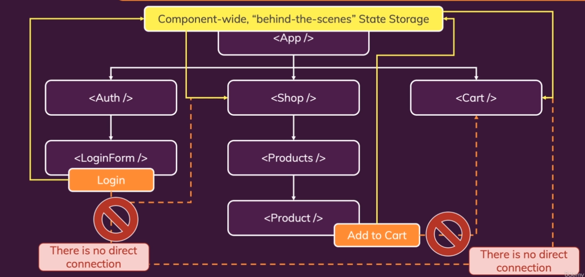
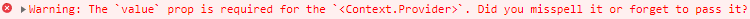

在開發中，時常會遇到一個問題是，因為 component 層層區分，當有一個子元件要傳資料給另外一條支線的子元件時，如果透過 props 傳遞就會變得相當麻煩，中間不需要得到這些資訊的 component 也需要幫忙傳遞，就像是如果今天要送一個禮物給堂弟，我不能直接拿給他，只能先傳給父親，再傳給爺爺，接這再傳給堂弟的父親，最後才會交到他的手上，在 Vue 中，可以透過 provide/inject & Vuex 來解決這些問題，React 中提供了一些方法稱為 - Context API
從下方的 component-tree 可以看到，即便是功能這麼單純的 component，在子元件之間的資料傳遞也想當不便，很顯然的我們需要一些其他方法來解決這些問題

Create Context File 首先，我們需要先建立一個檔案來存放這些共用資料，這樣的檔案可大可小，名稱上一般統一使用 store 作為資料夾名稱，再根據功能為檔案命名
1 2 3 src - store - auth-context.js
在這個檔案中，呼叫 React.createContext() 來建立 context，並將欲共用的變數放在裡面，最後透過 export 匯出回傳值
1 2 3 4 5 6 7 import React from "react" ;const AuthContext = React.createContext({ isLoggedIn: false , }); export default AuthContext;
Using Context with Provider 建立了 Context 後，接著就是要將這些資料分享到需要的 component 上，這時候就可以透過 Context Provider 將對應的 JSX 包住，這麼一來其中所有的 child component 就都能使用這些資料了
1 2 3 4 5 6 7 8 9 10 11 12 13 14 15 import AuthContext from "./store/auth-context" ;const App = () => { return ( <React.Fragment> <AuthContext.Provider> <MainHeader isAuthenticated={isLoggedIn} onLogout={logoutHandler} /> <main> {!isLoggedIn && <Login onLogin ={loginHandler} /> {isLoggedIn && <Home onLogout ={logoutHandler} /> </main> </AuthContext.Provider> </React.Fragment> ); };
甚至可以更進一步簡化將 React.Fragment 移除，因為這本來就是為了維持回傳單一組元件而存在
1 2 3 4 5 6 7 8 9 10 11 const App = () => { return ( <AuthContext.Provider> <MainHeader isAuthenticated={isLoggedIn} onLogout={logoutHandler} /> <main> {!isLoggedIn && <Login onLogin ={loginHandler} /> {isLoggedIn && <Home onLogout ={logoutHandler} /> </main> </AuthContext.Provider> ); };
Context Consumer 取得使用權後，還需要將資料個別放置到對應的地方，這次使用的對象是 MainHeader 內的 Navigation，同樣需要使用到另一組 context function - Consumer，不同的是，在裡面會有一組 callback function，context data 會由 function parameters 取得，最後 return JSX
1 2 3 4 5 6 7 8 9 10 11 12 13 14 15 16 17 18 19 20 21 22 23 24 import React from "react" ;import AuthContext from "../../store/auth-context" ;const Navigation = (props ) => { return ( <AuthContext.Consumer> {(ctx ) => { return ( <nav className={classes.nav}> <ul> {ctx.isLoggedIn && ( <li> <a href="/" >Users</a> </li> )} </ul> </nav> ); }} </AuthContext.Consumer> ); }; export default Navigation;
Default Value 但到目前為止會看到出現以下 error log，原因是 Context 中已經有預設值，但 Consumer 中所使用的初始值須由 Provider 提供，所以還需要在 Provider 加上初始值

1 2 3 4 5 6 7 8 9 10 11 12 13 14 15 const App = () => { return ( <AuthContext.Provider value={{ isLoggedIn: false , }} > <MainHeader isAuthenticated={isLoggedIn} onLogout={logoutHandler} /> <main> {!isLoggedIn && <Login onLogin ={loginHandler} /> {isLoggedIn && <Home onLogout ={logoutHandler} /> </main> </AuthContext.Provider> ); };
這麼一來就可以將原先透過 props 傳遞的方式移除了，並由 component 內的 State 來代表這個值
1 2 3 4 5 6 7 8 9 10 11 12 13 14 15 const App = () => { return ( <AuthContext.Provider value={{ isLoggedIn, }} > <MainHeader onLogout={logoutHandler} /> <main> {!isLoggedIn && <Login onLogin ={loginHandler} /> {isLoggedIn && <Home onLogout ={logoutHandler} /> </main> </AuthContext.Provider> ); };
useContext() React 提供了另一個 hook 來取代 Context Consumer，使的寫法更加簡潔，只需要呼叫 useContext() 並帶入 Context object，其所原傳的值就是上述 Context 中的共用變數了
1 2 3 4 5 6 7 8 9 10 11 12 13 14 15 16 17 18 import React, { useContext } from "react" ;import AuthContext from "../../store/auth-context" ;const Navigation = (props ) => { const ctx = useContext(AuthContext); return ( <nav className={classes.nav}> <ul> {ctx.isLoggedIn && ( <li> <a href="/" >Users</a> </li> )} </ul> </nav> ); };
Making Context Dynamic 在 Context 的使用上，當然不限於純值或物件資料，還可以共用 function 方法
1 2 3 4 5 6 7 8 9 10 11 12 13 14 15 16 17 18 19 20 21 22 23 24 25 26 27 28 29 30 31 32 33 34 35 36 37 38 39 const App = () => { return ( <AuthContext.Provider value={{ isLoggedIn, onLogout: logoutHandler, }} > <MainHeader /> <main> {!isLoggedIn && <Login onLogin ={loginHandler} /> {isLoggedIn && <Home onLogout ={logoutHandler} /> </main> </AuthContext.Provider> ); const Navigation = () => { const ctx = useContext(AuthContext); return ( <nav className={classes.nav}> <ul> {ctx.isLoggedIn && ( <li> <a href="/" >Users</a> </li> )} {ctx.isLoggedIn && ( <li> <button onClick={ctx.onLogout}>Logout</button> </li> )} </ul> </nav> ); }; };
但這裡就會有點納悶的是，既然預設值可以直接設定在 Provider value 上，那 Context 檔案內的設定必要性在哪 ? 是否可以維持空物件就好了 ?
其實維持空物件或預設值給定不同型別也不會出錯，但為了讓 IDE 可以較輕易辨別，建議還是給予初始設定，如果是 function 給定 anonymous function 即可
1 2 3 4 5 6 7 8 9 import React from "react" ;const AuthContext = React.createContext({ isLoggedIn: false , onLogout: () => {}, }); export default AuthContext;
When to use Props & Context ? Context 可以突破 component 之間的關係直接傳遞資料，但大部分的情況還是會直接透過 Props 直接傳遞父子元件之間的資料，雖然沒有明確規範，但如果只有單層，盡量還是保持透過 Props 傳遞，這麼一來透過查看傳遞方式就可以比較直接的知道資料傳遞的出處與目標。
Building & Using a Custom Context Provider Component 到目前為止，已經達成目的透過 Context 將特定 property & method 傳遞到指定元件，但目前的寫法會發現，所有關於登入的邏輯都直接寫在 root component App.js，一旦隨著開發的內容越來越多，更好的方法是將特定的邏輯都抽離出去成為一個負責專一功能的 component，Context Provider 也不例外，甚至可以將包含邏輯和 JSX 全部抽離到 Context Component，如下:
1 2 3 4 5 6 7 8 9 10 11 12 13 14 15 16 17 18 19 20 21 22 23 24 25 26 27 28 29 30 31 32 33 34 35 36 37 38 39 40 41 42 43 44 45 46 47 import React, { useState, useEffect } from "react" ;const AuthContext = React.createContext({ isLoggedIn: false , onLogout: () => {}, onLogin: (email, password ) => {}, }); export const AuthContextProvider = (props ) => { const [isLoggedIn, setIsLoggedIn] = useState(false ); useEffect(() => { const storedUserLoggedInInformation = localStorage .getItem("isLoggedIn" ); if (storedUserLoggedInInformation === "1" ) { setIsLoggedIn(true ); } }, []); const loginHandler = (email, password ) => { localStorage .setItem("isLoggedIn" , "1" ); setIsLoggedIn(true ); }; const logoutHandler = () => { localStorage .setItem("isLoggedIn" , "0" ); setIsLoggedIn(false ); }; return ( <AuthContext.Provider value={{ isLoggedIn, onLogout: logoutHandler, onLogin: loginHandler, }} > {props.children} </AuthContext.Provider> ); }; export default AuthContext;
並在注入點 index.js 導入 Context Provider component，將它直接包在 App..js 之外，這麼一來 root component App.js 內所有的 component 都可以直接取用 Context，邏輯也變得更加單純
1 2 3 4 5 6 7 8 9 10 11 12 13 14 15 16 17 18 19 20 21 22 23 24 25 26 27 28 29 30 31 32 33 import React from "react" ;import ReactDOM from "react-dom/client" ;import App from "./App" ;import { AuthContextProvider } from "./store/auth-context" ;const root = ReactDOM.createRoot(document .getElementById("root" ));root.render( <AuthContextProvider> <App /> </AuthContextProvider> ); import React, { useContext } from "react" ;function App ( const ctx = useContext(AuthContext); return ( <React.Fragment> <MainHeader /> <main> {!ctx.isLoggedIn && <Login /> {ctx.isLoggedIn && <Home /> </main> </React.Fragment> ); } export default App;
其他需要使用到 Context 資料的 component 便可自行透過 Context Consumer or useContext hook 取得
React Context Limitations 即便 React Context 提供了非常方便的方法讓 component 突破關聯傳遞資料，但仍有幾個使用上的限制，如下:
資料參考 React - The Complete Guide (Incl Hooks, React Router, Redux) GitHub